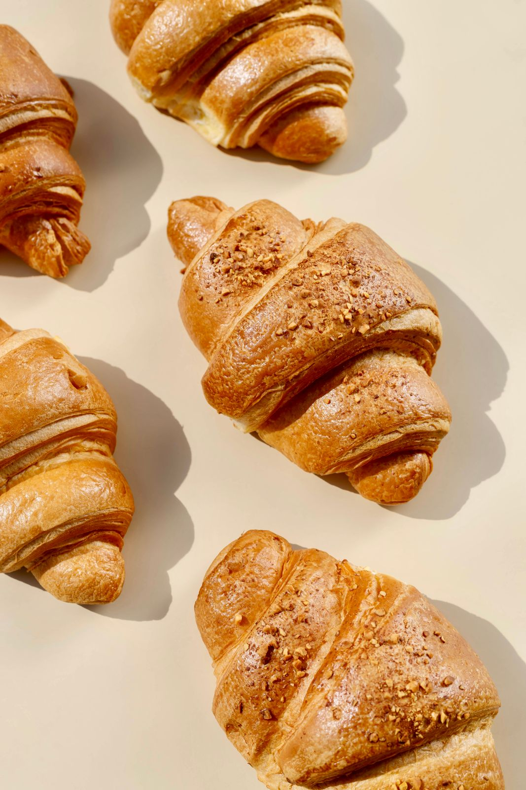

L'aria accogliente e la gentilezza al banco rendono ogni visita un piacere. È il posto giusto per leggere un libro o vedersi con gli amici. Ogni volta un dolce nuovo e un sorriso. Non vedo l'ora di provare il resto della vetrina!
Caffè ottimo e torte buonissime: il posto perfetto per un'ora tutta per me o per lavorare in pace. Tornerò di sicuro!